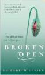

Broken Open: How Difficult Times Can Help Us Grow

by Elizabeth Lesser (2004)
It's the sort of nancy self-help psychobabble that would normally earn a derisive snort from my direction, but the onset of middle-age is broadening my horizons and dimming my discernment, so here I am, led to it by the memories of difficult times in my own life, now sufficiently distant for me to re-examine them, ponder how they changed me, and wonder how I could have better handled both my contributions and reactions to them.
To be sure, the author is at times a good deal more spiritual and mystical than I have any taste for - her visit to a trailer-park psychic may have been a revelationary and life-changing experience for her, but despite the poetic appeal of the events therein, it wasn't for me, and the specifics of the event would best have been omitted in trying to win me over.
But having said that, with a little patience, I found a great deal of value to be teased out of the other chapters. The overarching theme is undeniable: that we fill our lives with superficial distractions, in our efforts to keep up appearances, by design, we never have time or energy left over for the difficult and unpleasant tasks of serious introspection, of admitting and addressing our own flaws, or of providing the openness and honesty needed by those close to us.
Even when jolted out of our habitual routine by a painful external stimulus, such as personal injury or bereavement, in the hours or years of soul-searching that follow, it is all too easy to remain wrapped up in grief, anger or arrogance. But sometimes, in the depths of those dark times, people learn how to overcome their own ego, and discern what is truly important in their lives.
It sounds like a relentless downer, and it does indeed contain tales of woe, but each story told within contains a message of hope. Pretences drop, acceptance begins and honesty prevails. There are powerful lessons in both self-awareness and humility to be learned here, and I'm glad it found me when it did.
Rating: 6/10
Alright, can I turn the smartalec cynicism back on now?